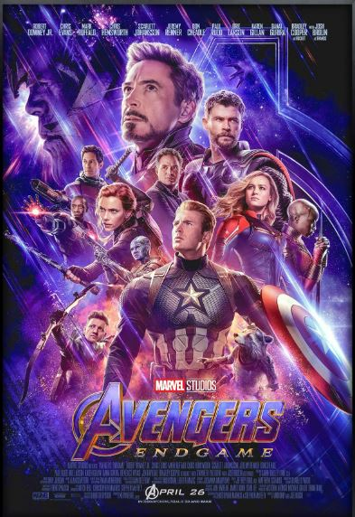

The Prestige
This is a movie about a magacian who uses science to perform magic.

Avenger Endgame
Completed the best super hero arch. It consist of multiple heros

A Wednesday
Movie that show how frustated a comman man is and if comman man decide he can fix the world.